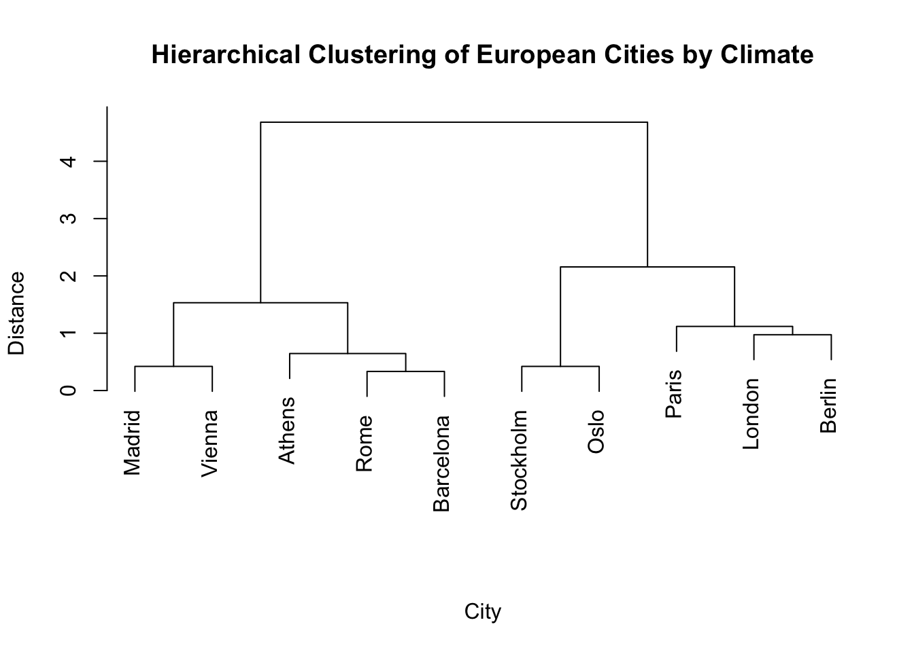
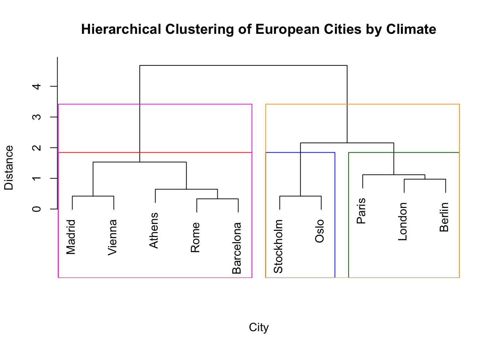

Definition (Hierarchical Clustering): A clustering algorithm that builds a nested hierarchy of non-overlapping, exhaustive clusters, where each data point belongs to exactly one cluster is called a hierarchical clustering algorithm.
❓ Does that mean we don’t have to fix the number of clusters?
Precisely! Hierarchical clustering returns a whole hierarchy of cluster structures, thus telling the user what a partition into \(K = 2\) or \(K = 3\) or \(K = 10\) clusters will look like for any integer value of \(K\) in \(\{ 1, \ldots, n\}\). However, in practical applications, this is sometimes too much information; we usually only care about a partition into a fixed number of clusters \(K\).
Types of hierarchical clustering
There exist two ways to do hierarchical clustering:
Agglomerative hierarchical clustering starts with \(K = n\) clusters (each observation forms its own cluster) and recursively merges clusters until just \(K=1\) cluster with all observations is obtained.
Divisive hierarchical clustering starts with \(K=1\) cluster (all observations form a cluster together) and recursively splits clusters until \(K=n\) clusters are obtained, with each observation forming its own cluster.
The theory and implementations described below refer to agglomerative hierarchical clustering.
Agglomerative Clustering Implementation
We present the steps used to perform hierarchical agglomerative clustering below:
Compute dissimilarities: Construct dissimilarity/distance matrix \(D^{(0)}\) with \(D^{(0)}_{i,j} = d(\mathbf{x}_i, \mathbf{x}_j)\) for a dissimilarity/distance function \(d\).
Recursive steps: Repeat the following steps until \(t = n-1\):
Merge: Find the two clusters that are least dissimilar and merge them, i.e. merge clusters \(C_{i^*}, C_{j^*}\) where \(i^*, j^*\) are such that \(D^{(t-1)}_{i^*,j^*} = \min\limits_{i \neq j} D^{(t-1)}_{i,j}\).
Update dissimilarities: Update matrix of dissimilarities by computing cluster dissimilarities with the merged cluster, i.e. \([D^{(t)}]_{i,j} = d(C_i, C_j) \ \forall 1 \leq i < j \leq n-t\).
Increment: Set \(t \leftarrow t + 1\).
Output: Cluster hierarchy.
💡 Fun fact
The implementation described above is for any general dissimilarity/distance function \(d\). In fact, the R implementation of hierarchical agglomerative clustering requires a dissimilarity/distance matrix as input, not the full data set as e.g. kmeans.
❓ Dissimilarities between clusters?
Look at step 3ii. of the above implementation; what does it mean to compute dissimilarities between two clusters \(C_i\) and \(C_j\)? How can we do that?
Linkage Criteria
One of the recursive steps of hierarchical agglomerative clustering involves constructing the matrix of dissimilarities so that an element \((i, j)\) represents the dissimilarity between clusters \(C_i\) and \(C_j\). However, clusters are (non-empty) sets of observations, so how can we apply a dissimilarity function on them? This can be done by specifying the dissimilarity of any two clusters as a function of the pairwise distances of observations included in these. This is precisely what a linkage criterion does! The table below displays some of the most commonly-used linkage criteria that can be used:
\(\frac{\lvert C_i \rvert \lvert C_j \rvert}{\lvert C_i \cup C_j \rvert} \| \mathbf{m}_i - \mathbf{m}_j \|^2\), \(\mathbf{m}_k\) is the centroid of cluster \(C_k\)
Centroid
\(\| \mathbf{m}_i - \mathbf{m}_j \|^2\), \(\mathbf{m}_k\) is the centroid of cluster \(C_k\)
Note🤔 Quiz: Let \(C_1 = \{1, 2\}\) and \(C_2 = \{3, 4\}\) , where:
\[
\mathbf{X} = \begin{pmatrix}0 & 0 \\ 1 & -2 \\ 5 & -1 \\ 2 & 2\end{pmatrix}.
\] What is the dissimilarity between \(C_1\) and \(C_2\) using the Euclidean distance and the single linkage?
A. \(\sqrt{5}\)
B. \(\sqrt{8}\)
C. \(\sqrt{17}\)
D. \(\sqrt{26}\)
Show Answer
B.\(\sqrt{8}\)
Try computing the dissimilarity between \(C_1\) and \(C_2\) using different linkage criteria. How does that change?
Hierarchical Agglomerative Clustering in R
Hierarchical agglomerative clustering is available in R using the hclust function. This takes a dissimilarity matrix and a linkage criterion as input arguments. Let us look at an example on a synthetic data set about climate in 10 European cities. The data includes the average temperature, annual precipitation and sunshine hours recorded over a year. We use agglomerative clustering with the Euclidean distance and complete linkage to obtain a cluster hierarchy. Notice that we can plot the hierarchy using plot.
# Create data set of European cities with their climate characteristicscities <-data.frame(avg_temp =c(9, 10, 15, 16, 18, 5, 6, 12, 14, 17),annual_rain =c(600, 750, 500, 450, 400, 800, 850, 650, 550, 480),sunshine_hours =c(1600, 1500, 2500, 2800, 2900, 1400, 1300, 2000, 2400, 2700),row.names =c("London", "Paris", "Madrid", "Rome", "Athens", "Stockholm", "Oslo", "Berlin", "Vienna", "Barcelona"))# Perform hierarchical clusteringdist_matrix <-dist(scale(cities))hc <-hclust(d = dist_matrix,method ="complete")# Plot the hierarchyplot(hc, main ="Hierarchical Clustering of European Cities by Climate",xlab ="City", ylab ="Distance", sub ="")

💡 Fun fact
The plot of hierarchies is called a dendrogram and comes from the Greek word “δένδρο” (dendro) which means “tree”. Do you see why a tree diagram is used here?
❓ Scaled data?
Take a look at the line where the dissimilarity matrix is constructed: dist_matrix <- dist(scale(cities)). What does the scale function do? (Hint: Type ?scale in your console to get the function documentation). Do you understand why it is used?
The dendrogram above shows how the cluster hierarchy is formed. We can also inspect the output of our hierarchical clustering output hc.
The values in height are always non-decreasing. Can you explain why?
We now have our cluster hierarchy but how do we get access to the clusters? The idea is that we can “cut the tree” structure we got in the dendrogram and look at the clusters obtained. We can either cut at a specific height, or enforce a specific number of clusters. For instance, in the chunk below, we cut the tree into \(K=3\) clusters and then we also cut it at a height of 3. Both actions can be performed using the cutree function. We can also visualise the obtained partitions on the dendrogram with rect.hclust.
# Cut to get 3 clustershc_clust1 <-cutree(tree = hc,k =3)# Cut at a height of 3hc_clust2 <-cutree(tree = hc,h =3)# Plot the hierarchy and obtained partitionsplot(hc, main ="Hierarchical Clustering of European Cities by Climate",xlab ="City", ylab ="Distance", sub ="")rect.hclust(hc, k =3, border =c("red", "blue", "darkgreen"))rect.hclust(hc, h =3, border =c("magenta", "orange"))

As we can see, a height of 3 has returned a partition into \(K=2\) clusters. In general, cutting a tree at a given height is not straightforward and requires inspecting the dendrogram in advance. This is why we normally prefer to cut in a way that allows specifying the number of clusters. Notice that cutting the tree at different heights may lead to the exact same partition in many cases.
❓ Agglomerative vs. Divisive hierarchical clustering
Agglomerative clustering is sometimes referred to as a “bottom-up” approach, whereas the term “top-down” is used to describe divisive clustering. Can you explain why? Relate your answer to the denrogram and what it illustrates.
🚀 Time to practice!
The mtcars data set includes eleven features related to the design and the performance of 32 cars. Load the mtcars data in R (just use data(iris) to load it to your working environment). Keep only the purely numeric variables (i.e. remove the two binary variables vs and am) and perform hierarchical clustering with different combinations of dissimilarity functions and linkage criteria. Plot dendrograms for some of the obtained cluster hierarchies and try to identify whether your partitions make sense for different numbers of clusters.
(You may find it helpful to look at the car model names by typing row.names(mtcars). Documentation for the data set is available by typing ?mtcars).
Key takeaways
Hierarchical clustering algorithms produce a hierarchy of partitions from \(K=1\) up to \(K=n\) exhaustive, non-overlapping clusters.
There are 2 main approaches to hierarchical clustering; agglomerative and divisive.
Hierarchical clustering can work with any dissimilarity function.
Linkage criteria specify the dissimilarity of any two clusters as a function of the pairwise distances of observations included in these.
Cluster hierarchies can be visualised using dendrograms.
Hierarchical agglomerative clustering is implemented in R using hclust.